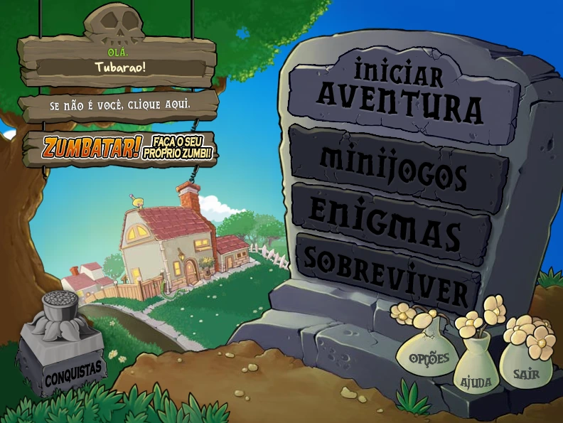
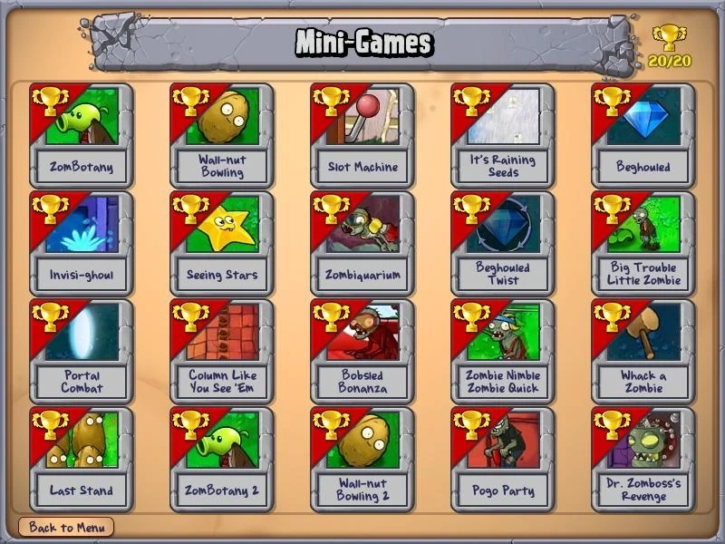
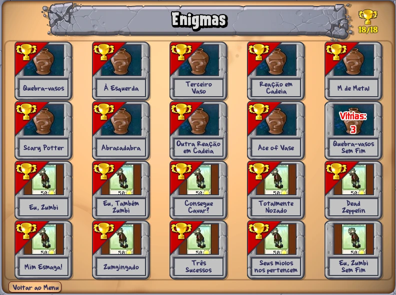
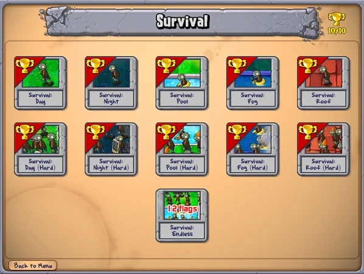
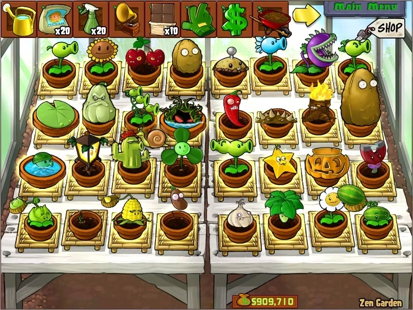

Modos de Jogo
Conheça os diferentes modos de jogo.
🌻 Aventura
Neste modo, o jogador avança por uma série de níveis em sequência, enfrentando diferentes tipos de zumbis e desbloqueando novas plantas à medida que progride. Com diferentes mapas, a jornada começa no jardim da frente durante o dia e evolui para fases noturnas, com neblina e até no telhado. É ideal para quem quer conhecer a história do jogo e aprender a usar bem cada planta.
🎮 Mini Jogos
Aqui, as regras clássicas são colocadas de lado. Você encontrará jogos como “Zumbi Vegetal”, “Boliche de Nozes” e “Cadê o Zumbi?”, cada um com mecânicas únicas e surpreendentes. São desafios curtos e criativos, perfeitos para quem quer testar estratégias diferentes.
🧩 Enigmas
Este modo é dividido em dois tipos: “Zumbi ou Planta?” e “Quebra-cabeça de Invasão”. Em um, você controla as plantas e precisa quebrar vasos que podem conter plantas ou zumbis, tome muito cuidado ao quebrar um. No outro, você assume o papel dos zumbis e tenta superar a defesa das plantas. Se você gosta de pensar e agir com calma, esse modo é pra você.
🧟♂️ Sobrevivência
O objetivo aqui é simples: sobreviver o máximo de tempo possível. Você enfrenta várias ondas de zumbis seguidas e pode escolher suas plantas entre cada rodada. Há variações como “Sobrevivência: Dia”, “Sobrevivência: Telhado” e até “Sobrevivência: Infinita”. Um verdadeiro campo de batalha para jogadores experientes.
🌱 Zen Garden
Este modo é mais calmo e voltado para o colecionismo. Aqui, você cultiva plantas especiais que podem ser obtidas durante o jogo. Regue-as, dê fertilizante, música e repelente e em troca, elas geram moedas. Uma forma divertida de acumular dinheiro e cuidar do seu próprio jardim pessoal.